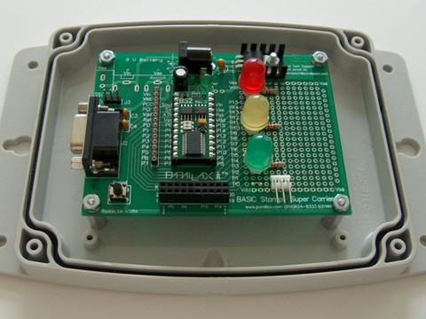

A weblog focused on interesting circuits, ideas, schematics and other information about microelectronics and microcontrollers.
E-books
Disclaimer
Because I have not tested all electronic circuits mentioned on this pages, I cannot attest to their accuracy; therefore, I do not provide a warranty of any kind and cannot be held responsible in any manner.
RS-232 to TTL convertor
4. August 2008 - 12:43 — adminThis small realization, based on one of the most common IC (MAX232) is designed to create a small and convenient TTL to RS232 and vice versa convertor.
Capacitive sensor
4. August 2008 - 0:37 — adminA simple six button keypad based on the QProx QT160 charge transfer proximity sensor chip.
Digital Logic and Microprocessor Design with VHDL
3. August 2008 - 23:53 — adminA book about the VHDL by Enoch O. Hwang from La Sierra University, Riverside
Nokia 1100 LCD Pic interface
28. July 2008 - 11:34 — adminNokia 1100 display working with a PIC writen in Microchip C.
PIC-based real-time clock with DS1307
27. July 2008 - 12:02 — adminThis PIC project uses an I2C Real Time Clock IC (DS1307) and a four digit seven segment display to create a standard desk clock.
Stamp-based garage parking assistant
25. July 2008 - 18:40 — adminThe Garage Parking Assistant makes it easy to pull in the garage by signaling you with a traffic-light style display of when to pull in (GREEN), slow down (YELLOW) and stop (RED).

Unicorn USB bootloader
23. July 2008 - 19:26 — adminMy first experiment: How to modify standard Microchip's USB bootloader for the Unicorn experimenter kit.
Post-It notes based on STAMP
22. July 2008 - 17:32 — adminUsing the STAMP microcontroller this project write-up details out how to make an electronic post-it notes display. All software & step by step guide is right there for you and it's written very clearly.
dsPIC WAV Player
22. July 2008 - 11:01 — adminAudio playback using the dsPIC on a simple breadboard layout with a free code library for SD card access from Microchip.
SquidBee
21. July 2008 - 21:56 — adminSquidBee is an Open Hardware and Source wireless sensor device based on Arduino and XBee module.